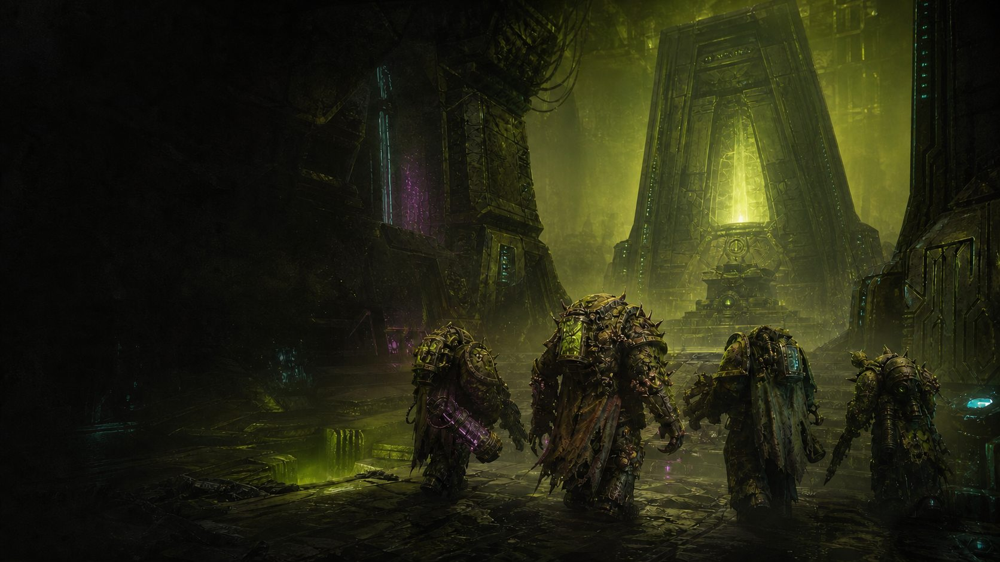

Nothing to buy or paint
Share our hand-painted miniatures and use the terrain, printed references, and materials already waiting at the table.
Choose your path // 01 Recruit
Launching Fall 2026
Learn without the pressure
You do not need an army, a rulebook, or a clue what half the words mean. We provide the game and introduce it one decision at a time.
From the outside, miniature wargaming can look like dense rulebooks, expensive armies, hours of assembly and painting, and no obvious way to find a first game.
It can also carry the stereotype of an intensely competitive room where everyone already knows more than you. We built this to defy that expectation.
Your first game is not an entrance exam.
We create a judgment-free table where questions are expected, mistakes are useful, and competition can wait until you want it.
Share our hand-painted miniatures and use the terrain, printed references, and materials already waiting at the table.
Play alongside other recruits with a Commander guiding the table. Learn together and face the game together.
No rulebook homework. We explain each decision when it matters so you can focus on the story unfolding on the table.
First-time Recruits who reserve one of the limited learning-table seats through Meetup will receive a complimentary set of dice at their first event.
Continue at your speed
Come back for the beginner league, learn hobby skills in future painting classes, or work toward competitive tournaments. Keep it cooperative, get competitive, or simply enjoy an occasional game. The next step is yours.
New players will have what they need for a first game. No expensive shopping list, required purchase, or homework.
Arriving alone should not be the hardest part. Everyone starts together at Joystick, then walks to Dice City as a group.
Meetup will announce the final recurring weekday. These launch-night times remain the plan.
Find the Wasted Wargaming group at Happy Hour, pick up a Recruit badge, and meet the people joining your table.
We make the short walk to Dice City together. Your Commander will have the learning table and materials ready.
Work through a cooperative game with other new players. Ask questions, make decisions, and let the rules arrive when they become useful.
Wasted Wargaming adds no fee and requires no purchase. The gathering is all ages, and the group leaves Joystick before its 21+ policy begins at 9:00 PM.
See the complete planned schedule
Four Recruits will share a Plague Marine Kill Team while a Commander teaches the rules and runs the awakening tomb. Everything needed to play is waiting at the table.
Read the mission briefingJoin the Meetup for launch notifications and Recruit seat alerts. The Dice City Discord is optional, but it is a good place to ask about the event, meet the community, and see what people are playing.